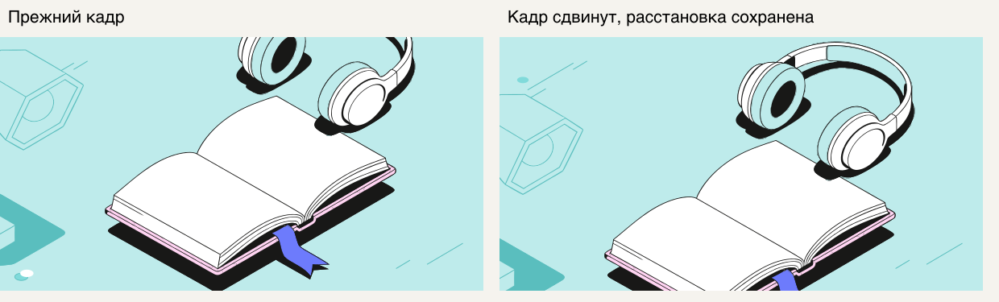

Метафоры: смысл и кадрирование
Четыре новых запроса, 36 SVG. Добавлены уточнения смыслового выбора и сдвиг кадра без изменения расстановки. Предыдущая одобренная галерея сохранена отдельно.
Скачать весь набор SVG и проектов · Скачать веб-страницу
До / после: исправление кадра прежней сцены
Тот же ответ Gemini и те же координаты предметов. Сдвинута только камера, масштаб 1:1.

Предыдущая одобренная галерея